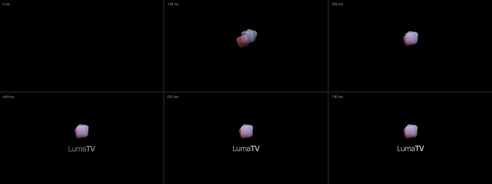
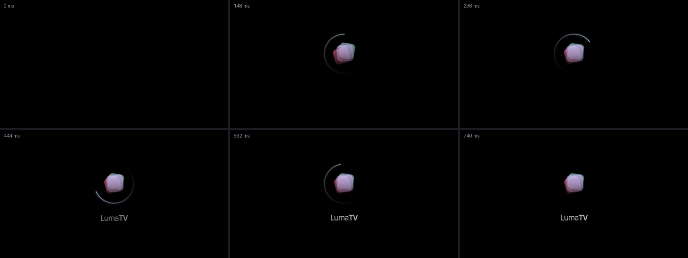
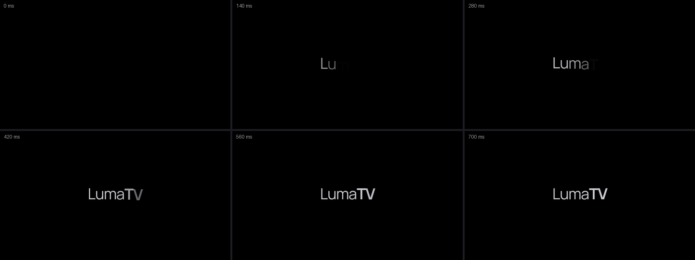
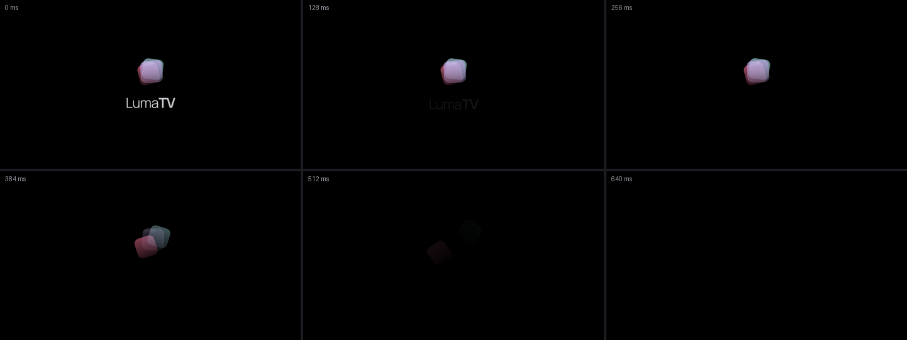
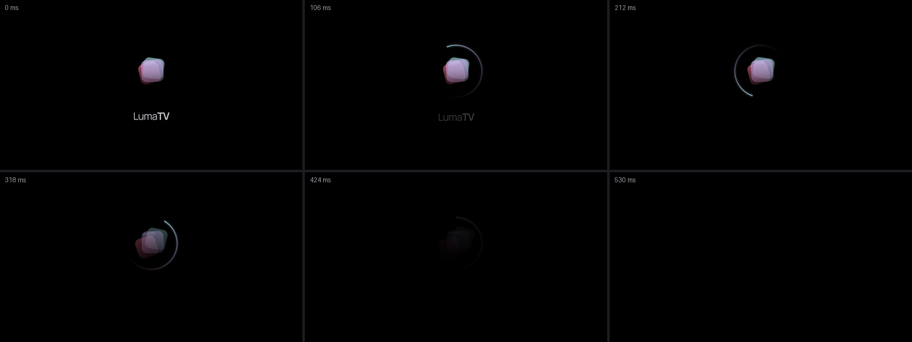
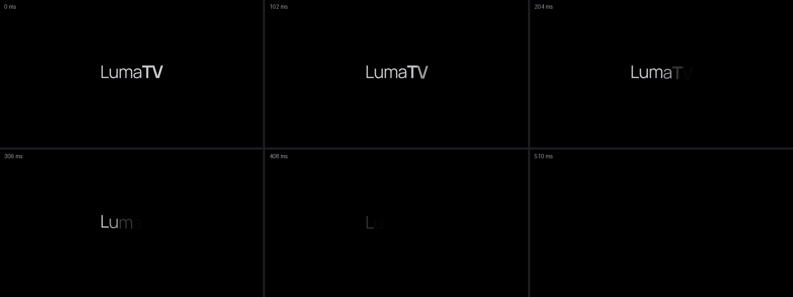

Power-on and power-off logos: pick one of each
Option 1 of each is the default. Stills at 0, 20, 40, 60, 80 and 100 % of the animation, left to right, top to bottom.
Power-on 1 (default): three glass panes slide in and settle, then the name rises under them
740 ms

Power-on 2: the mark fades up in place, one soft arc sweeps around it, the name fades in
740 ms

Power-on 3: the name alone, its letters rising one after another
700 ms

Power-off 1 (default): the name sinks and fades, then the panes slide apart and fade
640 ms

Power-off 2: the name fades, an arc sweeps round the mark against the way in, the mark fades
530 ms

Power-off 3: the name alone, its letters leaving from the right
510 ms
